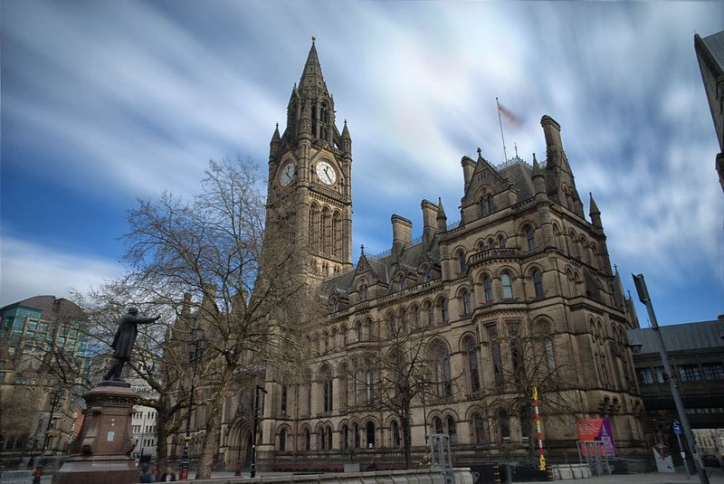

Conozca Manchester
Inicio
Medios de transporte
Contacto
Lugares que no podes dejar de visitar
John Rylands Library
Ayuntamiento de Mánchester

Northern Quarter
Old Trafford
Catedral
Museo Nacional de Fútbol
Chinatown
Castlefield
Shambles Square